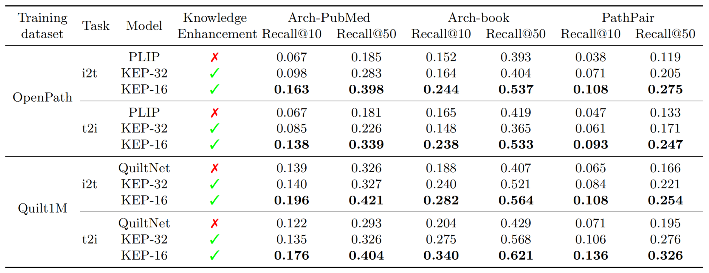
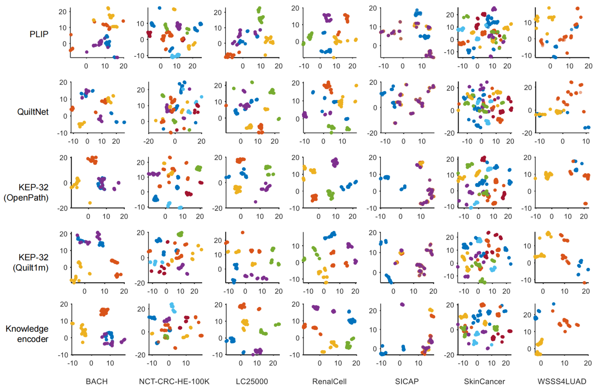

Knowledge-enhanced Visual-Language Pretraining for Computational Pathology
|
Xiao Zhou1
|
Xiaoman Zhang1,2
|
Chaoyi Wu1,2
|
Ya Zhang1,2
|
Weidi Xie1,2
|
Yanfeng Wang1,2 
|
|
|
1Shanghai Artificial Intelligence Laboratory
|
2Shanghai Jiao Tong University
|
Abstract
In this paper, we consider the problem of visual representation learning for computational pathology, by exploiting large-scale image-text pairs gathered from public resources, along with the domain-specific knowledge in pathology.
Specifically, we make the following contributions: (i) We curate a pathology knowledge tree that consists of 50,470 informative attributes for 4,718 diseases requiring pathology diagnosis from 32 human tissues. To our knowledge, this is the first comprehensive structured pathology knowledge base; (ii) We develop a knowledge-enhanced visual-language pretraining approach, where we first project pathology-specific knowledge into latent embedding space via a language model, and use it to guide the visual representation learning; (iii) We conduct thorough experiments to validate the effectiveness of our proposed components, demonstrating significant performance improvement on various downstream tasks, including cross-modal retrieval, zero-shot classification on pathology patches, and zero-shot tumor subtyping on whole slide images (WSIs).
Method
Stage-I. Pathology Knowledge tree (PathKT) construction:
a. We collect pathology-specific knowledge, including disease synonyms, definitions, histology and cytology descriptions from public educational resources, such as text books, professional websites, and structured databases, like UMLS and OncoTree.
b. We structure these pathology knowledge into a knowledge tree by expanding the OncoTree. After deduplication and noise reduction, we finally get 50470 disease attributes from 4718 diseases involving human 32 tissues.
Stage-II. Pathology knowledge encoding:
we align different disease entities with their corresponding free-text attributes. Since a disease entity has a varying number of attributes, we adopt a metric learning based approach to encode this pathology knowledge, such that the synonyms, definitions, and corresponding histological/cytological features are close in the embedding space, while that of different diseases are pushed apart.
Stage-III. Pathology knowledge enhanced pretraining:
we present a simple yet effective pretraining approach, termed KEP, that leverages the established knowledge encoder to guide visual-language pretraining for computational pathology. our goal here is to construct a visual-language embedding space, where the paired image-text have similar representations. Specifically, the weights of the pretrained knowledge encoder are firstly used to initialize the text encoder. And then, to keep the alignment between images and free-form captions inside the knowledge space and thus the images can be linked to their implicit disease entities, we adopt an additional frozen branch to continuously distill pathology knowledge to the text encoder.
Experimental Results
Task-I. Retrieval:
For the cross-modal retrieval task, we test our models on three datasets. The experimental results are shown in the following table, KEP-32 and KEP-16 denote different variants of our approach with different visual encoders. It can be seen that, our model KEP-32 outperforms PLIP and QuiltNet on almost all datasets. KEP-16 further improves the cross-modal retrieval performance by a large margin.

Task-II. Zero-shot Patch Classification:
We evaluate the performance of different models on patchlevel pathology images from 8 datasets. This figure reports the performance distribution, where each point denotes the performance of one single text prompt. It can be seen that our approach KEP-32 and KEP-16 achieve better zero-shot classification performance than PLIP and QuiltNet on all datasets except for LC25000. To validate the robustness of our text encoders towards different text prompts, we visualize the embeddings of different class prompts. It can be seen that, compared to PLIP and QuiltNet, the text encoder of KEP-32 generates well-separated prompt embeddings of different classes.

Task-III. Zero-shot tumor subtyping on WSIs:
We evaluate the transfer ability of different models for tumor subtyping on common and rare cancers. the performance comparison of tumor subtyping on common cancers, including TCGA-BRCA (common), TCGA-NSCLC and TCGA-RCC WSIs. It can be seen that KEP-16 outperforms PLIP and QuiltNet on all WSI datasets. KEP-CTP achieves better or comparable performance than MI-Zero-Bio and MI-Zero-Pub, which use in-house data for pretraining. For rare cancers, we evaluate the performance on six BRCA subtypes, including 2common and 4 rare cancers. The experimental results are shown in the following table. It can be seen that our method KEP-16 pretrained on OpenPath outperforms PLIP and QuiltNet by a large margin on both common and rare breast cancers.
Acknowledgements
Based on a template by Phillip Isola and Richard Zhang.